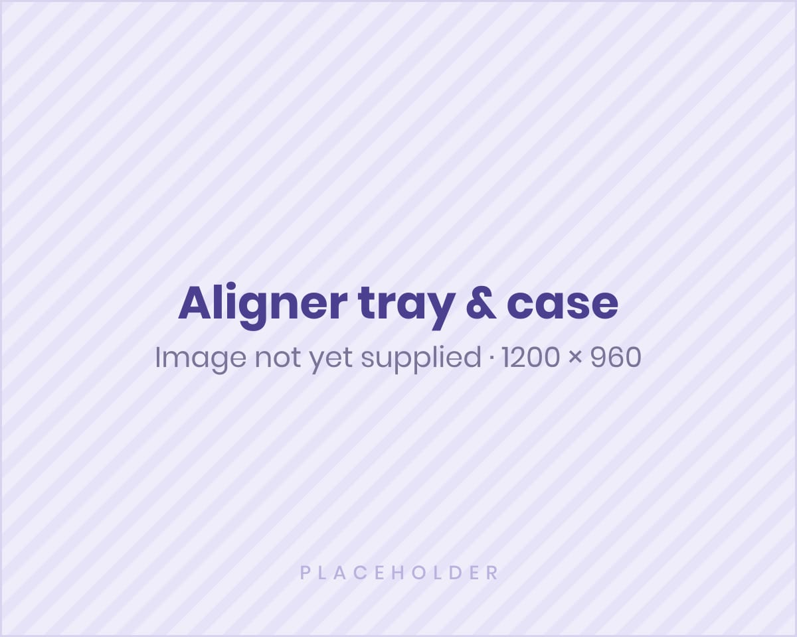
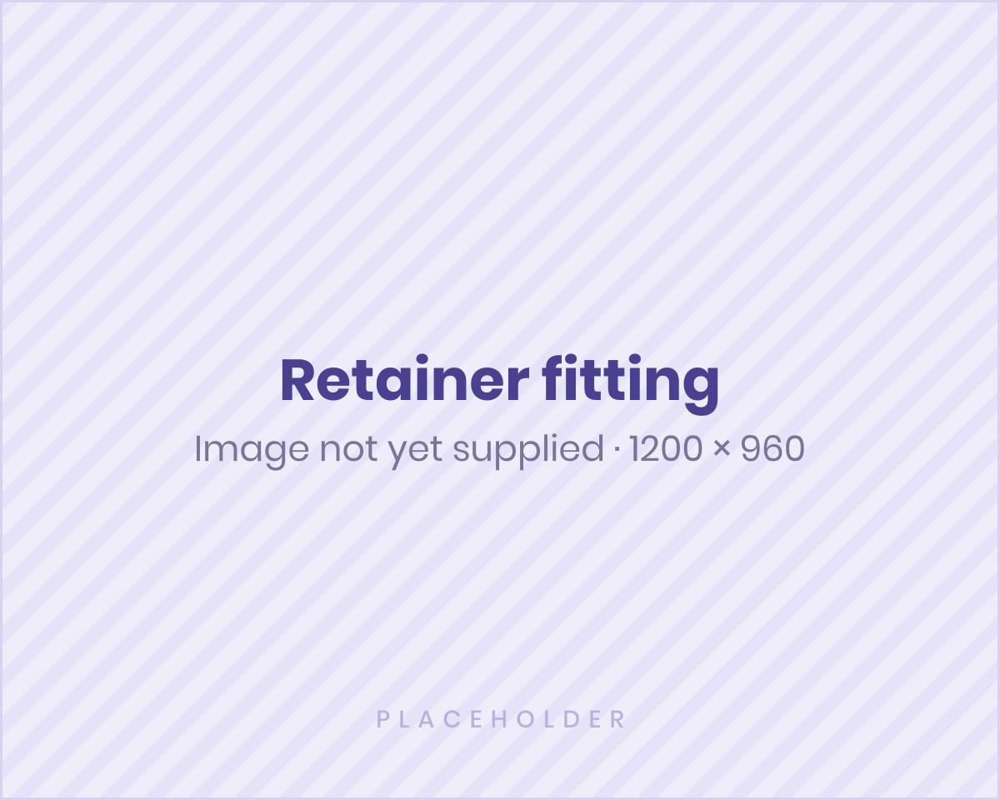

Assessment first
Teeth, bite, and oral health are checked before any plan is made.
Safety & aftercare
Clear aligner treatment works best as a partnership. Here is how we keep care safe and clinically guided — and how you can protect your progress at home and after treatment.

Our clinical standards
Teeth, bite, and oral health are checked before any plan is made.
If aligners are not appropriate, we explain alternative orthodontic options.
Regular checks on fit, comfort, and movement, with adjustments if needed.
A calm, private setting at One Galle Face built to clinical standards.
During treatment
You may feel pressure or mild discomfort when starting a new tray. This usually means the aligners are guiding tooth movement and often settles after a few days.
Contact the clinic if you have persistent pain, a broken or ill-fitting tray, swelling, or any concern about your treatment.

After treatment
Teeth can naturally shift over time. Retainers are usually recommended after aligner treatment to help maintain the final tooth position. Your clinician will explain the type of retainer, how long to wear it, and when to return for review.
Read more FAQs